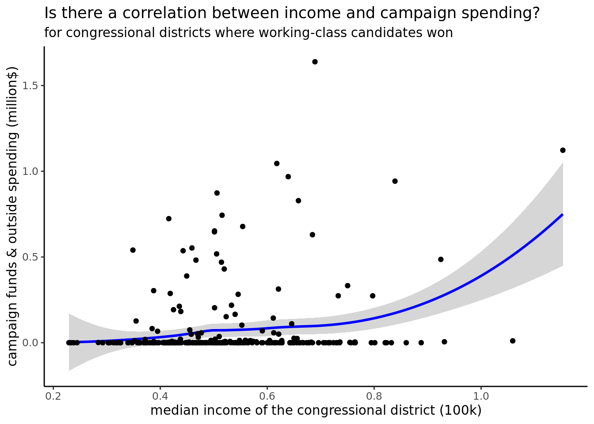
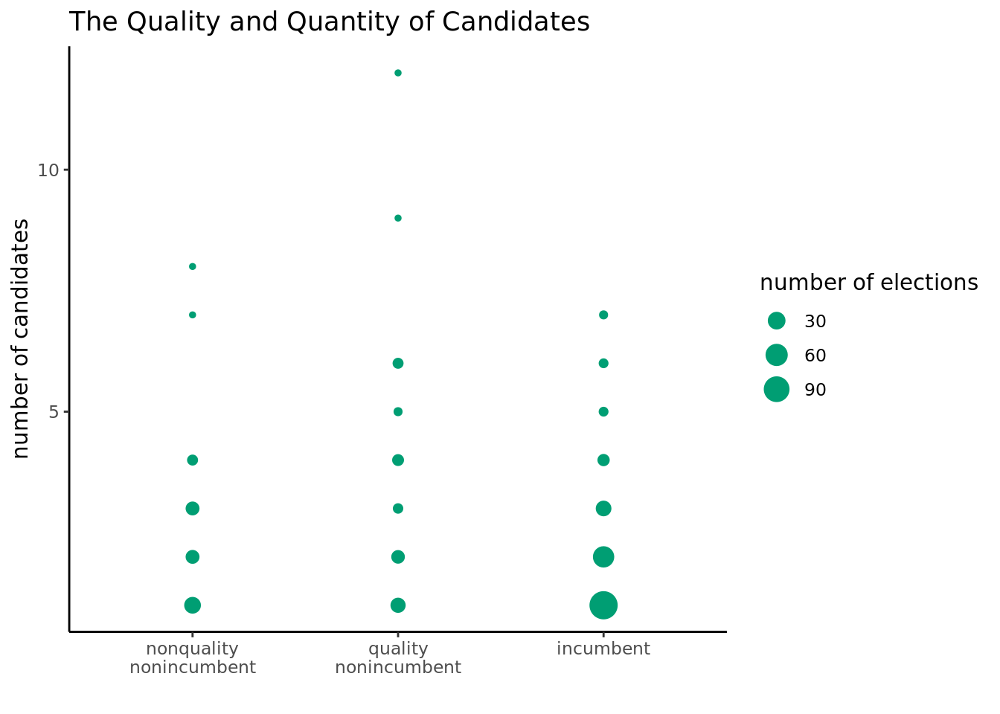
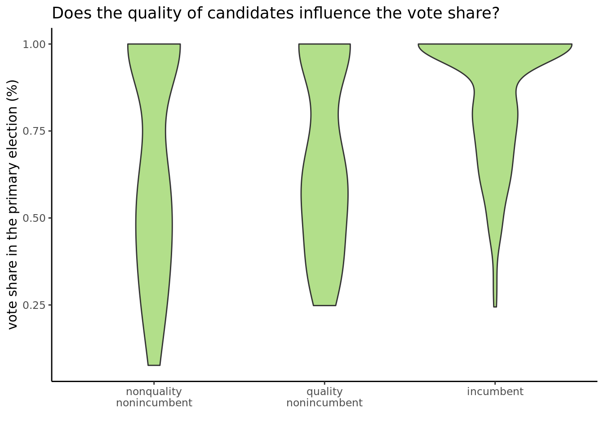
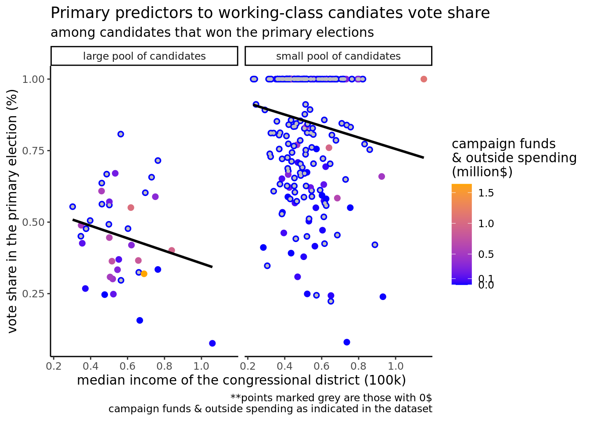

Working Class Representative Performance
Which factors positively contribute to votes in their favor
Introduction and Data
Millionaires make up 3% of the United States population but represent a majority of officials in the House of Representatives, Senate, and Supreme Court.1 Among these high level government officials, the working class is not highly represented. Much research has gone into trying to understand factors that contribute to the lack of working class representation in high level government positions such as the high cost of political campaigns and lack of working-class candidates. But what about the select few that overcome these barriers? Who are the politicians in high-level government positions that started off as working-class candidates and what contributed to their success?
The Candidates data set used in this research project is sourced from a publication in the Political Research Quarterly (2023) titled “Primary Barriers to Working Class Representation.” The authors are Eric Hansen, Assistant Professor of political science at Loyola University Chicago and Sarah A. Treul, an Associate Professor of political science at UNC. Hansen and Treul built on a data set published in 2019 by Treul and Rachel Porter that contained primary election records from 1980 to 2016. Hansen and Treul collected web searches on candidate occupations sourcing from local news, blogs, and social media. Hansen and Treul then conducted novel analysis on on the occupational background of all candidates who competed in the U.S. House of Representatives primaries between 2008 and 2016.2
The Candidates data set includes 7869 observations and 24 variables. Each observation represents a candidate who competed in the U.S. House primaries between 2008 and 2016. Each row of observation measures factors informing election results, such as vote share, fundraising, incumbency status, education level, ideology, number of opponents, and political affiliation. Not all variables are useful in terms of predicting the candidate’s performance as some of them are only numerical descriptions of vote share.
We do not have any ethical concerns about the data. We hope that our research will encourage rather prevent working-class people from running for office.
Research Question: What factors contribute to votes in working class representatives’ favor?
To answer our research question of what factors contribute to votes in working class representatives’ favor we selected fourteen independent variables that potentially measure factors related to the candidate’s vote share. We looked at candpct, a quantitative variable which represents the candidate’s vote share in the primary election as our dependent variable to quantify success in elections.
Categorical Independent Variables Studied: state_abbrev (the state the candidate is from), cand_party (the party of the candidate), quality_cand (0=candidate is nonquality nonincumbent, 1=candidate is quality nonincumbent, 2=candidate is incumbent), openseat (whether the incumbent is running for reelection), third (whether candidate runs as a third party or independent), gop (whether the candidate is Republican), former_worker (whether the candidate used to be a worker but is no longer now)
Quantitative Independent Variables Studied: qualnumber (count of quality opponents), partyDonors1 (count of donations candidate received from donors to their party’s national campaign funds), college (percentage of the congressional district’s residents who hold four-year college degrees, dist_income (median income of the congressional district), total_primary (total dollars contributed toward a candidate’s campaign funds and outside spending, unit: millions of dollars), ideo_extreme (absolute value of Bonica’s CFscore measure of candidate ideology)
candnumber (count of opponents in the candidate’s primary election) – quantitative but later factored into categorical
This research question is important for the following reasons: Given that the working class is less represented among high-level elected government officials, we would like to encourage research dedicated to this issue and identify factors that contribute to this phenomenon. Research in this area has focused on the barriers hindering working-class representation. As a result, information on what enables working-class candidates to overcome barriers to election in high-level government positions is lacking. Our research, looks to working-class candidates elected to the U.S. House of Representatives from 2008 to 2016 as a case study. Our research aims to provide valuable insight and guidance to future working-class candidates in shaping their campaign strategies and fundraising efforts. We hope this will contribute to more equality and equity in government.
Look to appendix for explanation of variables used and excluded in our analysis
Data Cleaning
Warning in write.csv(candidate, file = "data/candidate.csv", col.names = TRUE):
attempt to set 'col.names' ignoredSummary Statistics
mean_candpct mean_candnumber mean_qualnumber mean_total_primary
1 0.8035573 2.012821 0.7051282 0.06642554
mean_dist_income mean_college
1 0.5168471 0.1704061The mean candidate vote share in the vote share is 0.8035573, the mean number of candidates (opponents) is 2.012821, the mean number of quality candidates (opponents) is 0.7051282, the mean total dollars towards campaign funds and outside spending is 0.06642554 million dollars, and the mean district income is $51,684.71.
EDA
`geom_smooth()` using method = 'loess' and formula = 'y ~ x'
The correlation between percentage of the median income of the residents and the campaign spending is non-linear, positive, but not as strong as the previous ones. The positive correlation makes sense, but given a lot of the observations in the data set had 0$ as its campaign funding and outside spending, this may not be the comprehensive picture.

Based on this plot, we can see that most of the elections, we have an incumbent competing against a small number of candidates, which makes sense given we are only looking at elections where they won. A large majority of the elections also had fewer than 5 candidates. There are also a few outliers where the candidate, as a quality nonincumbent successfully exceled a large number of opponents.

Based on the violin plots, we can see that when the candidate is an incumbent, they tend to garner a large vote share, the distribution of which is highly skewed. At the same time, nonquality nonincumbent, unsurprisingly, has the lowest vote share and also the largest spread and variance in terms of the vote share.
Hypothesis Based on our understanding of factors contributing to candidate success, we believe that total_primary (total dollars contributed toward a candidate’s campaign funds and outside spending in dollars), quality_candidate (incumbent/quality status of the candidate), and qualnumber (number of quality opponents) will most impact candidate success, with greater campaign money, incumbent status, and a lower number of quality components resulting in higher candidate success (i.e., contribute to votes in working class representatives’ favor).
Literature
Primary Barriers to Working Class Representation 3
This research article is written by Sarah Treul who co-published the dataset Primary Barriers to Working Class Representation which we hope to utilize in our research. Her research seeks to answer how working class candidates fare in primary elections given that working class candidates are a minority on the ballot compared to white-collar candidates. The research article analyzed occupational backgrounds of primary election candidates for the U.S. House of Representatives from 2008 to 2016 with election results. Treul and Hansen found that from 2008 to 2016, working class candidates are 31% less likely to win elections and tend to score 24% less votes than white collar candidates. In their analysis, Treul and Hansen suggests that lower success in primary elections for the working class may be due lower funding and negative bias among party leaders towards working class candidates.
This article uses the Primary Barriers to Working Class Representation data set to analyze election results based on whether the candidates were working class and then analyzes factors that affected why working class candidates did not win elections. Our research would address the other side of this in seeking to understand how working class candidates overcame barriers to winning primary elections.
Methodology
Analysis Procedure:
- To start off, we filter the dataset. First, we keep only candidates with working-class background (worker == 1) and have won the election (winwin == 1). We do this because we want to focus on working-class candidates who have won the election in our research. Then, we select the columns for the variables we will use dropping 8 columns (worker_current_recode, race_id, year, dem_vote, candvotes, tvotes, ideo_extreme, qualbin). We explained these variables and why we drop them in the “variables” section in the appendix. Lasly, we drop the rows with “N/A” for any of our selected variables since this would affect the accuracy of our model fitting and selection process. After all these procedures, we have 337 observations left.
We chose multivariate linear regression as our methodology to answer the research question because we were looking for a method that determines the relative strength of explanatory variables and finds trends in data with respect to our response variable (candpct).
- We use the forward and backward model selection method to compare and choose the variables that best predict the dependent variable. We choose to use stepwise selection (forward and backward model selection) method because it helps find the best fit model. During the stepwise selection, we use step AIC in the forward and backward model selection to choose the best-fit model, in which lower AIC suggests better fit and preferred model. Analyzing the AIC values is important because it quantifies which variables are most predictive.
Specifically, for the forward selection, we first try to fit each variable in a linear regression model with a single independent variable and find out which fits the best (the one with the lowest AIC). Then, we try to add each variable into the existing best model. Theoretically, we repeat this process by trying to add more variables and compare the AIC until we find the best model. Since the number of variables is too large, we use the stepAIC method in R to perform the forward model selection. We choose the stepAIC method because it can be used to simplify the model of choice without reducing its predictive capabilities, which is consistent with our goal. Based on the result of the stepAIC, we get a best-fit model from the forward selection.
To confirm we are using the best model selection methods, we use the stepAIC method to perform the backward model selection and produce a best-fit model.
From the models produced from the forward and backward selection, we select the model with the lowest AIC value. Using our selected model, we conclude the most predictive variables related to the vote share and the coefficients of these factors.
Using the selected variables, we run an interactive multiple linear regression model to see which of the additive and interactive model works better. Based on the results, we select the model with the lower AIC.
Lastly, to make the results more straightforward and readable, we visualize the results. We choose the top three predictive variables (the top three variables with the highest coefficient,which indicate they are more powerful and decisive factors) in our final model, and use ggplot in R to create a visualization including two dot plots that shows the relationship between the three variables and the response variable (the candidates’ vote share in the primary selection). We choose to use the facet of two dot plots because it helps to visualize the relationship of all three explanatory variables and the response variable in a single visualization. As a note, since our top three variables are all numerical, to make the graph more direct and informative, we group the variable candnumber (count of opponents) into small pools (1-3 opponents) and large pools (4 or more opponents). In our final visualization, our x-axis represents median income of the congressional district($100k), y-axis represents vote share in primary election (%), while the side-by-side graphs are based on candnumber.
Results
commented-out codes are used here to save space; reference the appendix for the generated outcomes
The best-fit model from the backward selection process has an AIC of -1236.62.
The best-fit model from the forward selection process has an AIC of -1221.48.
selected model
We ended up choosing the model from the backward selection method because it yielded a lower AIC, indicating that the model is better, and had fewer variables than the best model generated through forward selection. The variables included in the model are candnumber, quality_cand, qualnumber, openseat, dist_income, total_primary.
lm(formula = candpct ~ candnumber + quality_cand + qualnumber + openseat + dist_income + total_primary, data = candidate_final)
We then picked the top three variables: candnumber, dist_income, total_primary.
AIC for interaction model: -447.1903 Since the AIC for the interaction model is much larger than the additive model we get from the backward selection, we will stick to the additive model.
conclusion: the interactive multiple linear regression model gave us a worse AIC, -447, which was higher than 1236.62. Therefore, we will keep the original additive model.
Because the backward selection model gave us six variables, to choose the top three most prominent factors, we looked at their coeifficients. The three variables with the largest coefficients were: dist_income, which is the median income of the congressional district in $100K, total_primary, which is the total campaign funds and outside spending in millions, and number of candidates.
The generated outcomes (reference appendix) tell us that with one unit ($100k) increase in the congressional district’s median income, holding other variables constant, there is on average a 0.14525 percentage decrease in the candidate’s vote share. With one unit (1 million dollar) increase inthe total campaign funds and outside spending, there is on average a 0.16772 percentage increase in the candidate’s vote share. Lastly, every time there is one more candidate in the same election, there is, on average, a 0.11032 percentage decrease in avergae in the candidate’s vote share.
In short, among all the variables in the dataset, we have found the three factors with the most explanatory power. We have found that a candidate’s performance is positively correlated with total campaign funds and outside spending but negatively correlated with the median income of the congressional district and the number of competing candidates.
The following visualization incorporates all three of the variables with the most explanatory power. Candidate number has been mutated into a large pool and a small pool of candidates, enabling their faceting and visualization on the graph. Campaign funds are visualized by color, with an increase in warmth as funds increase. Finally, median income of the congressional district in $100k is on the x-axis, leaving our response variable, vote share (%), on the y-axis.
`geom_smooth()` using formula = 'y ~ x'
Discussions
While our hypothesis predicted total_primary, quality_candidate, and qual_number as best explanatory variables for working class candidate success, our linear regression found dist_income, total_primary, and candnumber to best predict candidate success. This means that as we predicted, the money contributed toward a candidate’s campaign funds positively influences a candidate’s success. Additionally, the median income of the congressional district negatively influences a candidate’s success, demonstrating that social class associations with candidates are important. Although we predicted that the number of quality candidates would be negatively correlated with success, the total number of candidates is, indicating that the quality of opponents does not matter as much as the number of them.
The variables that we analyzed that are predictive of working-class success in elections may be predictive of success but do not cause candidates to win elections. Thus our research is limited to establishing correlations rather than causations. This is important to note because even in addition to the variables we are studying there are other factors, some that cannot be quantified that contribute to a candidates success in an election. Even with our results outlining what variables are most predictive, this does not mean that in every election these will be valuable factors in a candidate’s success. Future research should collect and explore data on other factors that could potentially impact working class candidate success, in order to determine causation rather than correlation. Our research has limited applications because some factors that contribute to a candidates success such as income level or college education are not factors that can be changed when working a campaign strategy, yet understanding the importance of these variables can help candidates choose how to shape their own campaigns. Future research should focus on the efficacy of specific campaign strategies given the demographics of the candidate’s congressional district.
Appendix
Dependent variable: candpct, which represents the candidate’s vote share in the primary election.
Independent variables: We select the variables that potentially measure factors related to the candidate’s vote share. These selected 14 independent variables include:
state_abbrev (the state the candidate is from) – categorical
candnumber (count of opponents in the candidate’s primary election) – quantitative but later factored into categorical
cand_party (the party of the candidate) – categorical
quality_cand (0=candidate is nonquality nonincumbent, 1=candidate is quality nonincumbent, 2=candidate is incumbent) – categorical
qualnumber (count of quality opponents) – quantitative
openseat (whether the incumbent is running for reelection) – categorical
partyDonors1 (count of donations candidate received from donors to their party’s national campaign funds) – quantitative
college (percentage of the congressional district’s residents who hold four-year college degrees) – quantitative
dist_income (median income of the congressional district) – quantitative
total_primary (total dollars contributed toward a candidate’s campaign funds and outside spending, unit: millions of dollars) – quantitative
third (whether candidate runs as a third party or independent) – categorical
gop (whether the candidate is Republican) – categorical
ideo_extreme (absolute value of Bonica’s CFscore measure of candidate ideology)
former_worker (whether the candidate used to be a worker but is no longer now) – categorical
The variables we drop or do not use in our analysis:
worker_current_recode (binary indicator for whether the candidate was a worker) (We drop it because it is not an influential factor for our research question, and the “worker” variable is a more accurate indicator for us to choose the working class candidates.)
race_id (unique identifier for each candidate contest) (We drop it because this is an identifier and is not an informative variable)
year (the year of the election the candidate participate in) (We drop it because it is not an informative variable for us to understand and predict the vote share for working class candidates)
dem_vote (vote share for the Democratic candidate in the most recent presidential election) (We drop it because we are not interested in dividing up the candidates by party in the scope of this project)
candvotes (total number of candidate’s votes received) (We drop it because candvotes/tvotes = candpct, and we only need candpct as the response variable)
tvotes (total number of votes case for all candidates) (We drop it because candvotes/tvotes = candpct, and we only need candpct as the response variable)
Ideo_extreme (absolute value of Bonica’s CFscore measure of candidate ideology) (We drop it because around half or more of the observations have N/A for ideo_extreme, which would affect the feasibility and accuracy for the linear regression)
qualbin (there is no formal definition for this variable in the codebook or the source article, so we drop this variable)
Running Results
[1] 312Start: AIC=-1214.94
candpct ~ state_abbrev + candnumber + cand_party + quality_cand +
qualnumber + openseat + PartyDonors1 + college + dist_income +
total_primary + third + gop + former_worker
Step: AIC=-1214.94
candpct ~ state_abbrev + candnumber + cand_party + quality_cand +
qualnumber + openseat + PartyDonors1 + college + dist_income +
total_primary + third + former_worker
Step: AIC=-1214.94
candpct ~ state_abbrev + candnumber + cand_party + quality_cand +
qualnumber + openseat + PartyDonors1 + college + dist_income +
total_primary + former_worker
Df Sum of Sq RSS AIC
- state_abbrev 37 0.9444 5.5850 -1231.2
- cand_party 1 0.0000 4.6407 -1216.9
- college 1 0.0018 4.6424 -1216.8
- former_worker 1 0.0166 4.6572 -1215.8
- total_primary 1 0.0230 4.6636 -1215.4
<none> 4.6406 -1214.9
- openseat 1 0.0365 4.6772 -1214.5
- dist_income 1 0.0448 4.6855 -1213.9
- PartyDonors1 1 0.0512 4.6918 -1213.5
- qualnumber 1 0.1770 4.8176 -1205.3
- quality_cand 2 0.4048 5.0454 -1192.8
- candnumber 1 3.2524 7.8931 -1051.2
Step: AIC=-1231.15
candpct ~ candnumber + cand_party + quality_cand + qualnumber +
openseat + PartyDonors1 + college + dist_income + total_primary +
former_worker
Df Sum of Sq RSS AIC
- cand_party 1 0.0001 5.5851 -1233.1
- college 1 0.0190 5.6040 -1232.1
- PartyDonors1 1 0.0256 5.6106 -1231.7
- former_worker 1 0.0267 5.6117 -1231.7
<none> 5.5850 -1231.2
- openseat 1 0.0572 5.6422 -1230.0
- dist_income 1 0.1045 5.6895 -1227.4
- total_primary 1 0.1306 5.7156 -1225.9
- qualnumber 1 0.2281 5.8131 -1220.7
- quality_cand 2 0.6930 6.2780 -1198.7
- candnumber 1 5.1778 10.7628 -1028.5
Step: AIC=-1233.14
candpct ~ candnumber + quality_cand + qualnumber + openseat +
PartyDonors1 + college + dist_income + total_primary + former_worker
Df Sum of Sq RSS AIC
- college 1 0.0189 5.6041 -1234.1
- PartyDonors1 1 0.0255 5.6106 -1233.7
- former_worker 1 0.0268 5.6119 -1233.7
<none> 5.5851 -1233.1
- openseat 1 0.0575 5.6426 -1232.0
- dist_income 1 0.1057 5.6908 -1229.3
- total_primary 1 0.1305 5.7157 -1227.9
- qualnumber 1 0.2290 5.8141 -1222.6
- quality_cand 2 0.6943 6.2794 -1200.6
- candnumber 1 5.2761 10.8612 -1027.6
Step: AIC=-1234.09
candpct ~ candnumber + quality_cand + qualnumber + openseat +
PartyDonors1 + dist_income + total_primary + former_worker
Df Sum of Sq RSS AIC
- former_worker 1 0.0286 5.6326 -1234.5
- PartyDonors1 1 0.0299 5.6340 -1234.4
<none> 5.6041 -1234.1
- openseat 1 0.0545 5.6586 -1233.1
- dist_income 1 0.1226 5.7266 -1229.3
- total_primary 1 0.1256 5.7297 -1229.2
- qualnumber 1 0.2222 5.8262 -1224.0
- quality_cand 2 0.6770 6.2811 -1202.5
- candnumber 1 5.3145 10.9185 -1028.0
Step: AIC=-1234.5
candpct ~ candnumber + quality_cand + qualnumber + openseat +
PartyDonors1 + dist_income + total_primary
Df Sum of Sq RSS AIC
- PartyDonors1 1 0.0302 5.6628 -1234.8
<none> 5.6326 -1234.5
- openseat 1 0.0585 5.6911 -1233.3
- dist_income 1 0.1307 5.7634 -1229.3
- total_primary 1 0.1391 5.7717 -1228.9
- qualnumber 1 0.2238 5.8564 -1224.3
- quality_cand 2 0.8575 6.4901 -1194.3
- candnumber 1 5.3449 10.9775 -1028.3
Step: AIC=-1234.84
candpct ~ candnumber + quality_cand + qualnumber + openseat +
dist_income + total_primary
Df Sum of Sq RSS AIC
<none> 5.6628 -1234.8
- openseat 1 0.0544 5.7171 -1233.8
- dist_income 1 0.1146 5.7774 -1230.6
- total_primary 1 0.1727 5.8354 -1227.5
- qualnumber 1 0.2484 5.9112 -1223.4
- quality_cand 2 1.2057 6.8684 -1178.6
- candnumber 1 5.3292 10.9920 -1029.9
Call:
lm(formula = candpct ~ candnumber + quality_cand + qualnumber +
openseat + dist_income + total_primary, data = candidate_final)
Coefficients:
(Intercept) candnumber quality_cand1 quality_cand2 qualnumber
0.99505 -0.11032 0.07103 0.17129 -0.04884
openseat dist_income total_primary
0.05965 -0.14525 0.16772 Start: AIC=-919.93
candpct ~ state_abbrev
Df Sum of Sq RSS AIC
+ candnumber 1 7.0298 5.7892 -1165.95
+ qualnumber 1 3.0725 9.7464 -1003.42
+ quality_cand 2 1.3494 11.4696 -950.63
+ total_primary 1 0.6870 12.1319 -935.12
+ openseat 1 0.5464 12.2725 -931.52
+ college 1 0.4283 12.3907 -928.53
+ cand_party 1 0.4154 12.4036 -928.21
+ gop 1 0.4154 12.4036 -928.21
+ dist_income 1 0.3945 12.4244 -927.68
+ former_worker 1 0.2506 12.5684 -924.09
+ PartyDonors1 1 0.1835 12.6354 -922.43
<none> 12.8190 -919.93
Step: AIC=-1165.95
candpct ~ state_abbrev + candnumber
Df Sum of Sq RSS AIC
+ quality_cand 2 0.67374 5.1154 -1200.5
+ PartyDonors1 1 0.32251 5.4667 -1181.8
+ former_worker 1 0.23521 5.5540 -1176.9
+ dist_income 1 0.11709 5.6721 -1170.3
+ college 1 0.07691 5.7123 -1168.1
+ qualnumber 1 0.04488 5.7443 -1166.4
<none> 5.7892 -1166.0
+ total_primary 1 0.02896 5.7602 -1165.5
+ cand_party 1 0.02400 5.7652 -1165.2
+ gop 1 0.02400 5.7652 -1165.2
+ openseat 1 0.02174 5.7674 -1165.1
Step: AIC=-1200.55
candpct ~ state_abbrev + candnumber + quality_cand
Df Sum of Sq RSS AIC
+ qualnumber 1 0.246892 4.8685 -1214.0
+ PartyDonors1 1 0.078055 5.0374 -1203.3
+ dist_income 1 0.072287 5.0432 -1203.0
+ total_primary 1 0.057223 5.0582 -1202.1
+ openseat 1 0.047956 5.0675 -1201.5
+ former_worker 1 0.042431 5.0730 -1201.2
+ college 1 0.035398 5.0800 -1200.7
<none> 5.1154 -1200.5
+ cand_party 1 0.029513 5.0859 -1200.4
+ gop 1 0.029513 5.0859 -1200.4
Step: AIC=-1213.98
candpct ~ state_abbrev + candnumber + quality_cand + qualnumber
Df Sum of Sq RSS AIC
+ total_primary 1 0.057886 4.8107 -1215.7
+ dist_income 1 0.051909 4.8166 -1215.3
+ openseat 1 0.048603 4.8199 -1215.1
+ PartyDonors1 1 0.044956 4.8236 -1214.9
<none> 4.8685 -1214.0
+ former_worker 1 0.029496 4.8391 -1213.9
+ college 1 0.023676 4.8449 -1213.5
+ cand_party 1 0.012446 4.8561 -1212.8
+ gop 1 0.012446 4.8561 -1212.8
Step: AIC=-1215.72
candpct ~ state_abbrev + candnumber + quality_cand + qualnumber +
total_primary
Df Sum of Sq RSS AIC
+ dist_income 1 0.067039 4.7436 -1218.1
+ college 1 0.031578 4.7791 -1215.8
<none> 4.8107 -1215.7
+ PartyDonors1 1 0.028897 4.7818 -1215.6
+ openseat 1 0.025521 4.7851 -1215.4
+ former_worker 1 0.021097 4.7896 -1215.1
+ cand_party 1 0.009331 4.8013 -1214.3
+ gop 1 0.009331 4.8013 -1214.3
Step: AIC=-1218.1
candpct ~ state_abbrev + candnumber + quality_cand + qualnumber +
total_primary + dist_income
Df Sum of Sq RSS AIC
+ PartyDonors1 1 0.043686 4.6999 -1219.0
+ openseat 1 0.032495 4.7111 -1218.2
<none> 4.7436 -1218.1
+ former_worker 1 0.019121 4.7245 -1217.4
+ college 1 0.002431 4.7412 -1216.2
+ cand_party 1 0.001747 4.7419 -1216.2
+ gop 1 0.001747 4.7419 -1216.2
Step: AIC=-1218.98
candpct ~ state_abbrev + candnumber + quality_cand + qualnumber +
total_primary + dist_income + PartyDonors1
Df Sum of Sq RSS AIC
+ openseat 1 0.041595 4.6583 -1219.8
<none> 4.6999 -1219.0
+ former_worker 1 0.020906 4.6790 -1218.4
+ college 1 0.000682 4.6993 -1217.0
+ cand_party 1 0.000643 4.6993 -1217.0
+ gop 1 0.000643 4.6993 -1217.0
Step: AIC=-1219.76
candpct ~ state_abbrev + candnumber + quality_cand + qualnumber +
total_primary + dist_income + PartyDonors1 + openseat
Df Sum of Sq RSS AIC
<none> 4.6583 -1219.8
+ former_worker 1 0.0159243 4.6424 -1218.8
+ college 1 0.0010769 4.6573 -1217.8
+ cand_party 1 0.0000316 4.6583 -1217.8
+ gop 1 0.0000316 4.6583 -1217.8
Call:
lm(formula = candpct ~ state_abbrev + candnumber + quality_cand +
qualnumber + total_primary + dist_income + PartyDonors1 +
openseat, data = candidate_final)
Coefficients:
(Intercept) state_abbrevAL state_abbrevAR state_abbrevAZ state_abbrevCA
0.9970297 0.0447638 0.0721069 0.0045695 -0.0818251
state_abbrevCO state_abbrevFL state_abbrevGA state_abbrevHI state_abbrevIA
0.0640598 0.0342310 0.0701385 0.0484525 -0.0236901
state_abbrevIL state_abbrevIN state_abbrevKS state_abbrevKY state_abbrevMA
0.0560337 0.0213819 -0.0367687 -0.0442664 0.0605833
state_abbrevMD state_abbrevME state_abbrevMI state_abbrevMN state_abbrevMO
-0.1241546 0.0447505 0.0054445 0.1031188 0.0206124
state_abbrevMS state_abbrevNC state_abbrevNE state_abbrevNJ state_abbrevNV
-0.2417778 0.0211904 -0.0962373 0.0054412 0.0750933
state_abbrevNY state_abbrevOH state_abbrevOK state_abbrevOR state_abbrevPA
-0.0125032 -0.0418088 -0.1141928 -0.0723135 0.0423362
state_abbrevRI state_abbrevSC state_abbrevTN state_abbrevTX state_abbrevUT
0.1125064 -0.1440838 -0.0129538 0.0193479 0.0861948
state_abbrevVA state_abbrevWA state_abbrevWI candnumber quality_cand1
0.1227788 0.1469346 0.0298824 -0.1022728 0.0869592
quality_cand2 qualnumber total_primary dist_income PartyDonors1
0.1386594 -0.0452976 0.0785510 -0.1696173 0.0004986
openseat
0.0610943 [1] -453.4066Footnotes
1Burden, B. C. (2007). The Personal Roots of Representation. Princeton: Princeton University Press.↩︎
Treul, S. A., & Hansen, E. R. (2023). Primary Barriers to Working Class Representation. Political Research Quarterly, 0(0). https://doi.org/10.1177/10659129231154914↩︎
Treul, S. A., & Hansen, E. R. (2023). Primary Barriers to Working Class Representation. Political Research Quarterly, 0(0). https://doi.org/10.1177/10659129231154914↩︎